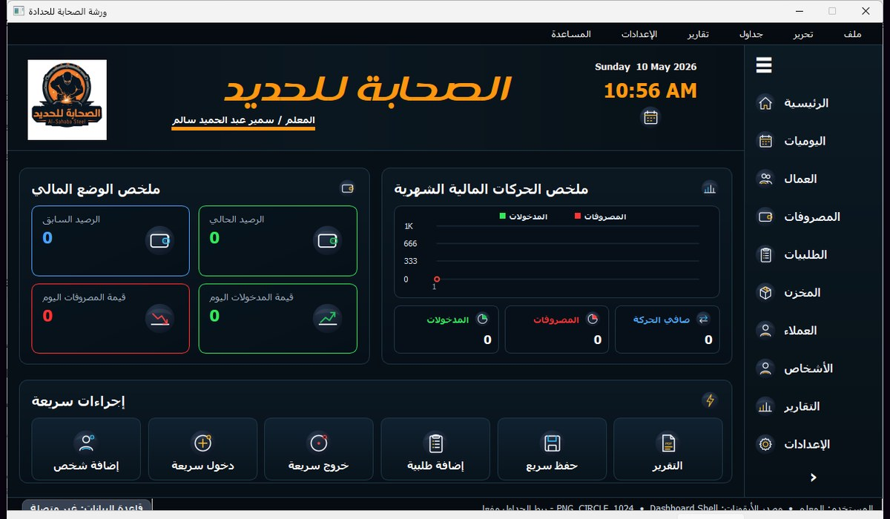
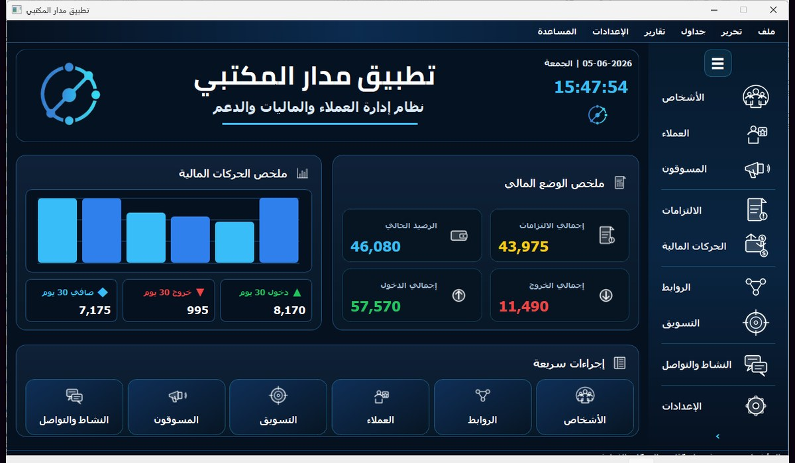
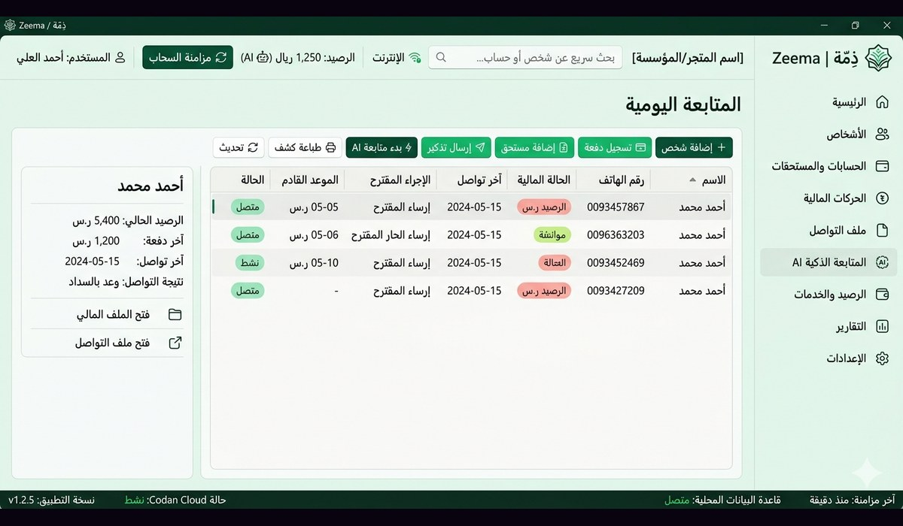
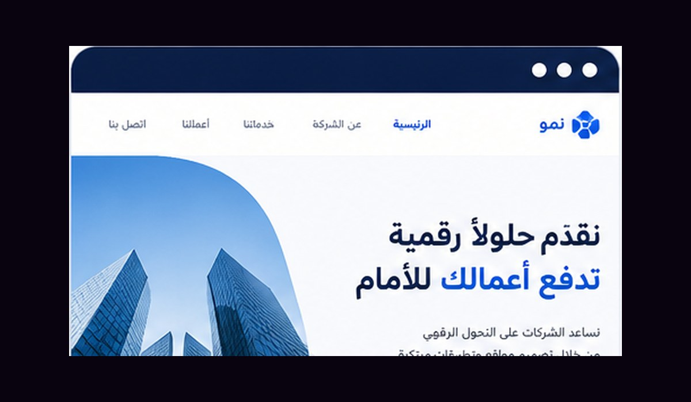

خلفية تصميمية
بدأت من عالم التصميم وبرامج Adobe، وهذا أعطاني عينًا بصرية في التعامل مع الألوان، المساحات، التكوين، وترتيب العناصر داخل الواجهة.
مبرمج ومصمم واجهات وتجارب رقمية
أعمل على بناء تطبيقات سطح مكتب وصفحات ويب وتجارب رقمية تجمع بين التفكير البرمجي والحس البصري. أمتلك خلفية قوية في التصميم وأدوات Adobe، وأطوّر مهاراتي البرمجية باستمرار لصناعة واجهات واضحة، منظمة، وقابلة للتطوير.
About
بدأت من عالم التصميم وبرامج Adobe، وهذا أعطاني عينًا بصرية في التعامل مع الألوان، المساحات، التكوين، وترتيب العناصر داخل الواجهة.
أركز على كتابة كود منظم وبناء تطبيقات عملية، خاصة تطبيقات سطح المكتب والواجهات المتجاوبة وتطبيقات الويب ذات البنية الواضحة.
أتعامل مع المشروع كمنظومة واحدة: فكرة واضحة، واجهة مريحة، كود قابل للتطوير، وتجربة استخدام تخدم الهدف بدل أن تزدحم بالتفاصيل.
Skills
Selected Work

نظام مكتبي لإدارة ورشة الحديد، يشمل العمال، اليوميات، المصروفات، الطلبات، العملاء، المخزون، والتقارير اليومية.

نظام CRM مكتبي لإدارة الأشخاص، العملاء، المسوقين، الالتزامات، الحركات المالية، النشاط والتواصل، والتقارير.

فكرة تطبيق لإدارة الديون والمستحقات والمتابعة اليومية، مع تنظيم الحسابات والتواصل والعمليات الميدانية.

صفحة ويب تعريفية بهوية رقمية منظمة، تعرض الخدمات والأقسام بأسلوب بصري واضح ومتجاوب.
Contact
أفضل طرق التواصل المباشر والمهني.